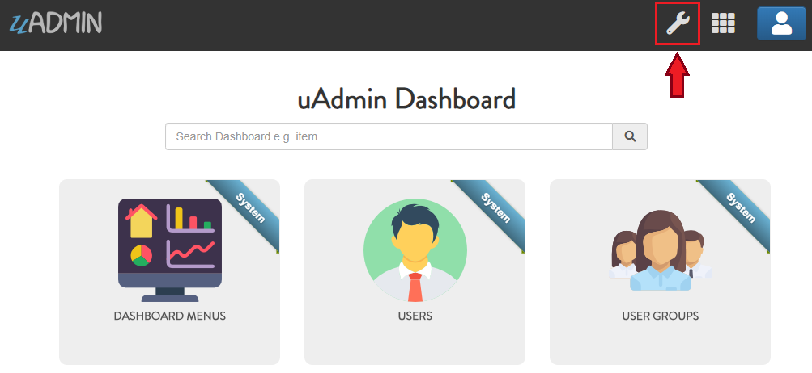
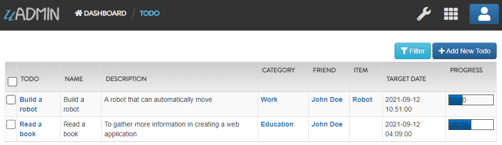

uAdmin Tutorial Part 9 - Introduction to API¶
In this part, we will talk about establishing a connection to the API, setting the URL path name, and getting the todo list data in the API Handler using JSON.
Create a file named api.go inside the api folder with the following codes below:
package api
import (
"net/http"
"strings"
)
// Handler !
func Handler(w http.ResponseWriter, r *http.Request) {
// r.URL.Path creates a new path called "/api/"
r.URL.Path = strings.TrimPrefix(r.URL.Path, "/api")
r.URL.Path = strings.TrimSuffix(r.URL.Path, "/")
}
As shown above, we have to call the variable named “APIHelp” to inform the user what are the methods to visit in the api path. To make the API function, we create a handler named “Handler” that handles two parameters which are http.ResponseWriter that assembles the HTTP server’s response; by writing to it, we send data to the HTTP client; and http.Request which is a data structure that represents the client HTTP request. r.URL.Path is the path component of the request URL.
Let’s set the RootURL to “/admin/” to make the “/api/” path functional. Choose ANY of these methods that you prefer.
Method 1: Within the Application Settings¶
Run your application. From uAdmin dashboard, click the wrench icon on the top right side to go to the settings.
Replace the value of Root URL from / to /admin/. Save it afterwards.

Method 2: ParseFormValue Function¶
Go to main.go and set uadmin.RootURL value as “/admin/”.
func main() {
// RegisterInlines codes
// Call InitializeRootURL function to change the RootURL value in the Settings model.
InitializeRootURL()
}
func InitializeRootURL() {
// Initialize Setting model
setting := uadmin.Setting{}
// Get the code
uadmin.Get(&setting, "code = ?", "uAdmin.RootURL")
// Assign the value as "/admin/"
setting.ParseFormValue([]string{"/admin/"})
// Save changes
setting.Save()
}
Now rebuild your application. Go to http://localhost:8080/admin/ and see what happens.

Establish a connection in the main.go to the API by using http.HandleFunc. It should be placed after the uadmin.Register and before the StartServer.
import (
"net/http"
// Specify the username that you used inside github.com folder
"github.com/username/todo/models"
// Import this library
"github.com/username/todo/api"
"github.com/uadmin/uadmin"
)
func main() {
// Some codes
// API Handler
http.HandleFunc("/api/", uadmin.Handler(api.Handler))
}
api is the folder name while Handler is the name of the function inside api.go. uadmin.Handler was used so you do not need to reinitialize the URL Path from request when you create subhandlers.
Let’s create another file inside the api folder named todo_list.go. This will return the list of your todo activities in JSON format.
package api
import (
"net/http"
"strings"
// Specify the username that you used inside github.com folder
"github.com/username/todo/models"
"github.com/uadmin/uadmin"
)
// TodoListAPIHandler !
func TodoListAPIHandler(w http.ResponseWriter, r *http.Request) {
// Fetch all records in the database
todo := []models.Todo{}
uadmin.All(&todo)
// Accesses and fetches data from another model
for t := range todo {
uadmin.Preload(&todo[t])
}
// Return todo JSON object
uadmin.ReturnJSON(w, r, todo)
}
Finally, add this piece of code in the api.go shown below. This will establish a communication between the TodoListAPIHandler and the Handler.
// Handler !
func Handler(w http.ResponseWriter, r *http.Request) {
r.URL.Path = strings.TrimPrefix(r.URL.Path, "/api")
r.URL.Path = strings.TrimSuffix(r.URL.Path, "/")
// ------------------ ADD THIS CODE ------------------
if strings.HasPrefix(r.URL.Path, "/todo_list") {
TodoListAPIHandler(w, r)
return
}
// ---------------------------------------------------
}
Now run your application. Suppose you have two records in your Todo model.
If you go to /api/todo_list, you will see the list of each data in a more powerful way using JSON format.

Congrats, now you know how to do the following:
Establishing a connection to the API
Setting the path name using r.URL.Path
How to use API Handlers
Fetches data in another model
Click here to view our progress so far.
In the next part, we will discuss about customizing your own API handler such as sorting the record in ascending or descending order, the starting point of execution process start until the assigned limit, and the action you want to perform in your database.